Tom and Jerry: Chase
UX Design Intern, May 2026-Aug 2026
-My Role-
Event UX Flow / Interaction Spec / UI Drafts / Reuse Strategy / Motion Direction
-Project Goal-
Design a Story-Driven Live Event “Thorns of Growth”
-Outcome-
7M+ LAUNCH EXPOSURE
+34% SKIN SALES
+ 8% STORY COMPLETION
What is Tom and Jerry: Chase?
A multiplayer action asymmetrical game where four mice have to face-off against a cat in a specific map full of items.
The aim of the cat is to trap, catch the four mice, who in turn are trying to survive, push cheese and escaping.
Overview
Thorns of Growth is a National Day story event.
Finishing each chapter brings one area of a gray dream town back to color, leading up to a final showdown with the Eternal Nightmare..
Problem
Goals
Core Loop
Approach
Full Flow
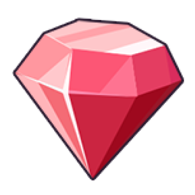
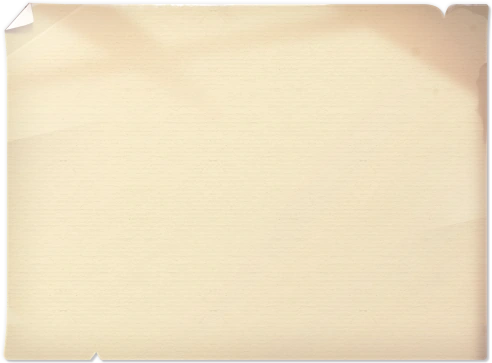
5.37%
Our last story event kept only 5.37% of players to the end.
People wanted stories; they just needed a reason to keep going.
1 · Enter
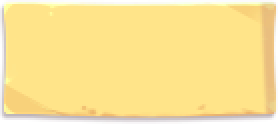
Event video
Cover pop-up
Gray map
Hand pointer
2 · Explore
Tap location
Watch Chapter
Color Area
Next area
half color
3 · Finale
Gate open
Watch stage
Statue petrifies
Path of hope
4 · Rewards
Map fully lit
6 hidden eggs
No hint
Final rewards
Progress bar · 1 reward per chapter (8 total)
Side shops · Sep 28 / Oct 1
↻ repeat × 4 locations
↻ legs → body → head
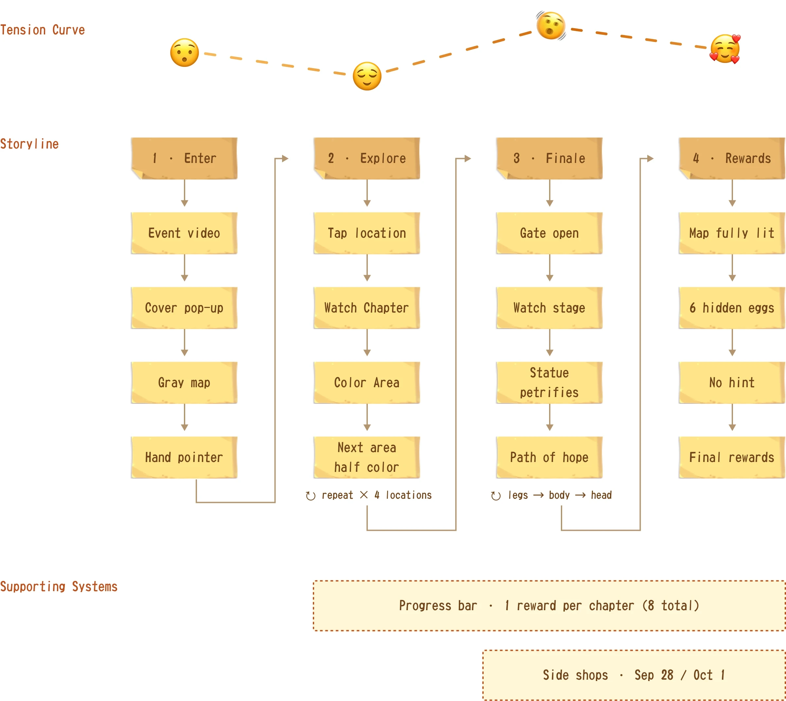
Guide without UI: let the world show the way
UI design
UI design
Tension Curve
Storyline
Supporting Systems
02·“Where do I go next?”
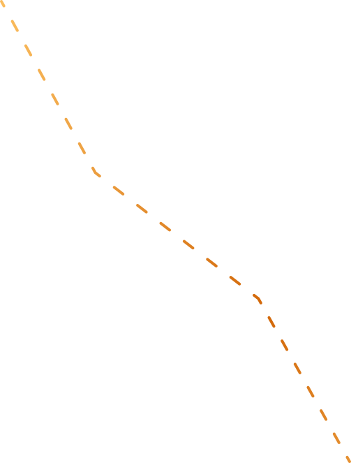
😯
😌
🥰
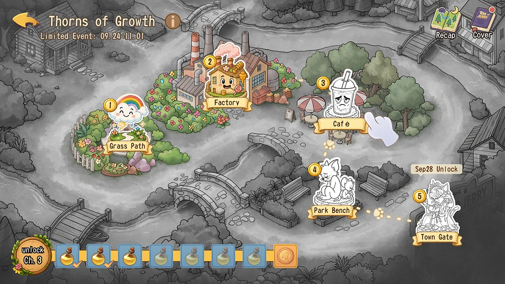
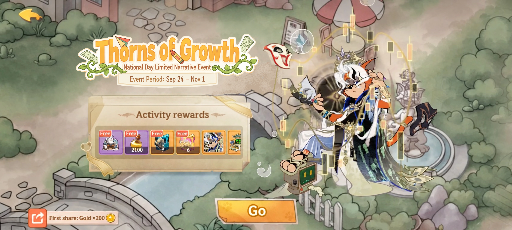
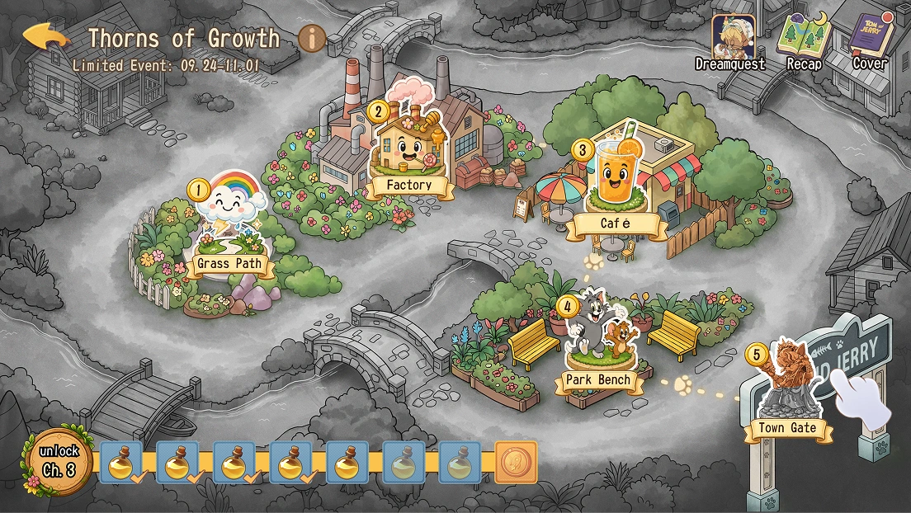
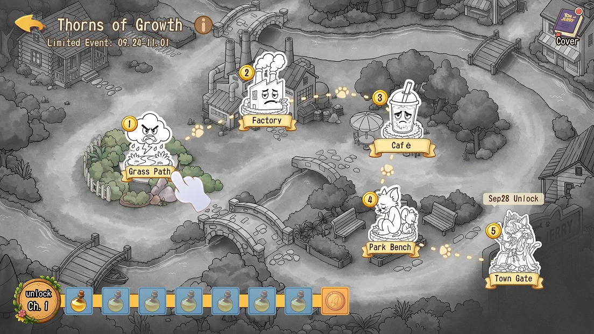
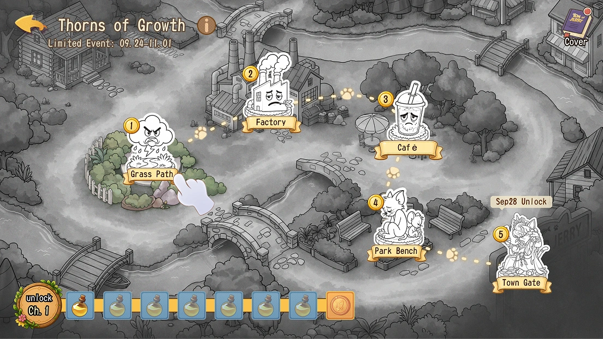
1
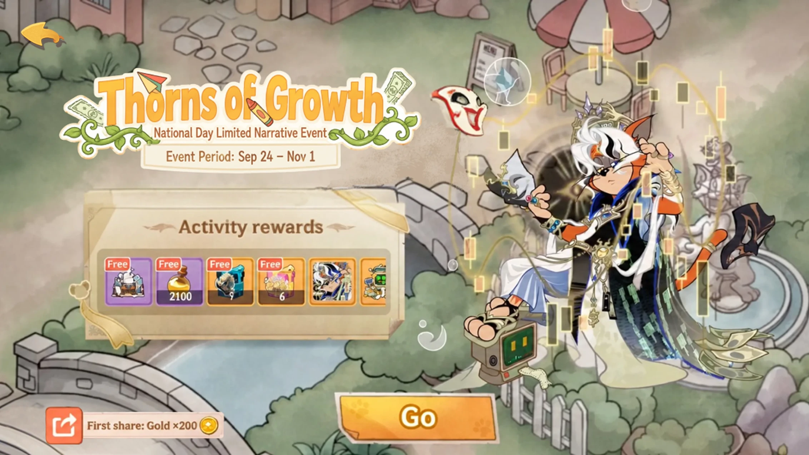
2
Make the payoff visible
01·“Why should I finish?”
1
2
① Half-color = next stop
② Hand pointer only on the current playable location
3
③ Smooth color transition, never a hard cut
① Full reward preview on the cover
② SP Skin attract users
③ Progress bar:A small win every chapter: 8 reward
Pace the story: give players a reason to return
03·“Why come back?”
1
2
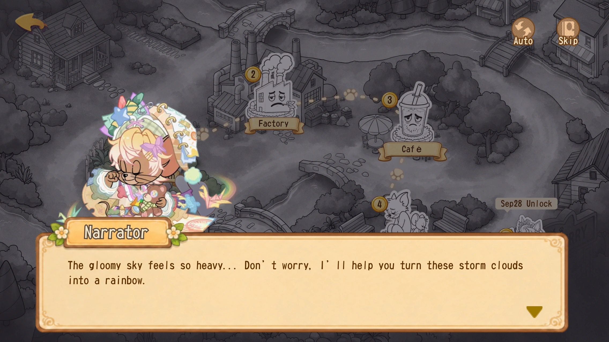
① Fog blocks it until Sep 28 (national holiday)
② Statue turns to stone: legs → body → head
UI design
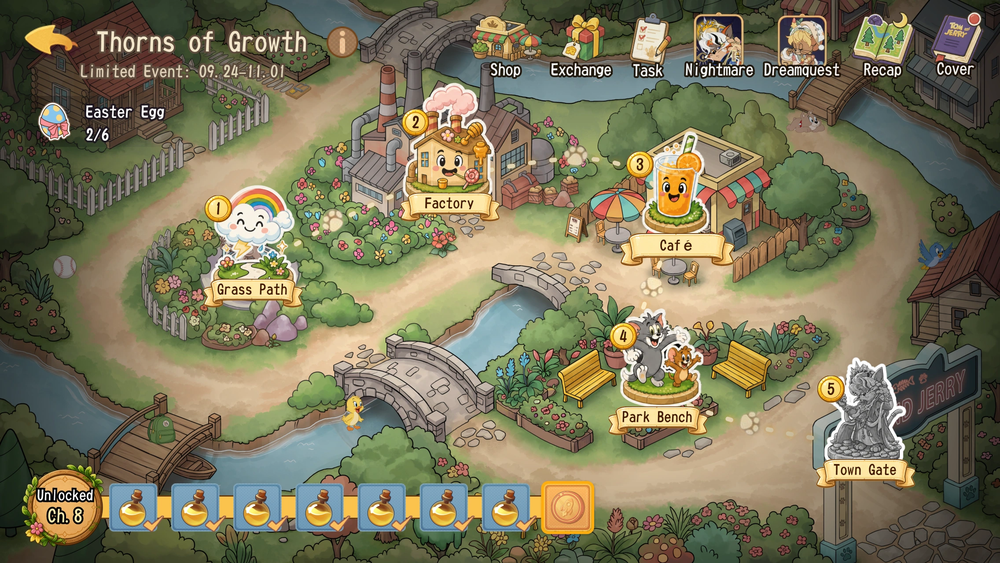
Build desire, not pressure
03·“Why would I buy?”
1
2
① Sleepwalker Jerry is the hero, and Lightning is the villain. Players meet both skins as characters first
② The shop shows up when the story peaks
3
3
③ 6 hidden eggs unlock once the map is fully colored
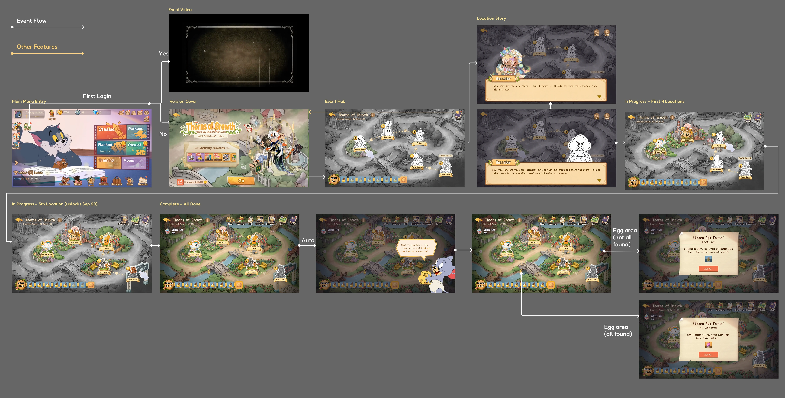
Storyline
Supporting Systems
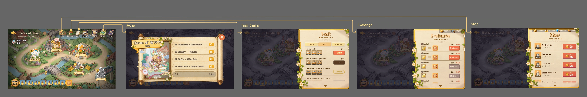
Final In-Game Result
Play Thorns of Growth: Interactive Demo
Try the event yourself. Tap the Thorns icon on the main menu, then follow the hand pointer to play each chapter and bring color back to the town. Once the map is fully colored, look for the 6 hidden eggs.
Open full screenThanks for watching
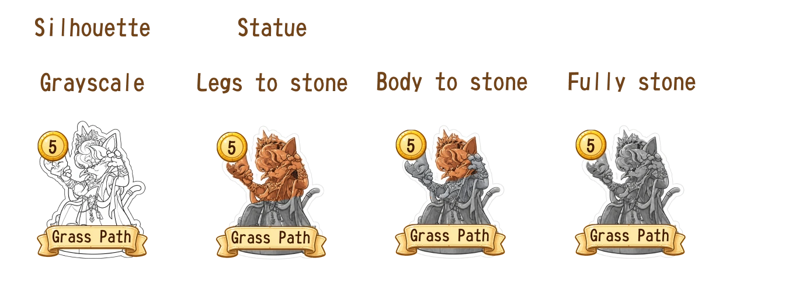
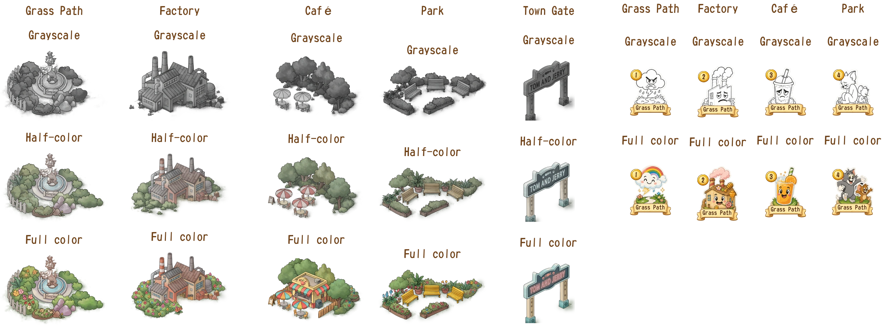